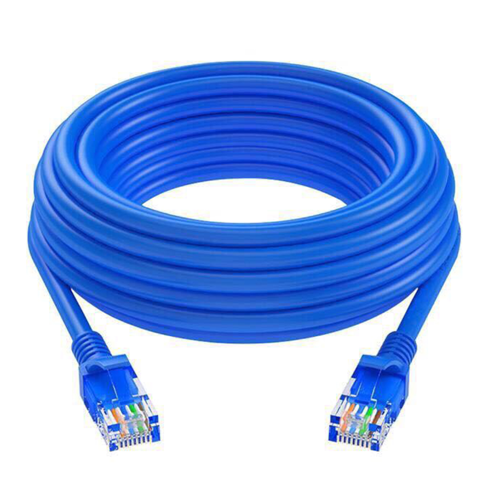
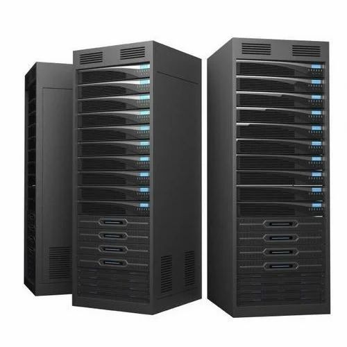

Network Scavenger Hunt
Computer networks are all around us, whether its at home, at school, or at work. For this assignment, I identified four everyday items that each play a role in how devices connect and communicate with one another. From the router that manages traffic in homes to the laptop that is used every day, each item is an essential part of the modern network.
1. Router
A router is a networking device that receives data from an internet service provider (ISP) and distributes it to devices on a local network. It acts as the "traffic director" of a network, deciding how data packets travel between devices and the internet.
Role in the Network
- Connects a local network (home or office) to the internet
- Assigns IP addresses to connected devices via DHCP
- Manages data traffic between multiple devices simultaneously
- Provides wireless (Wi-Fi) connectivity for devices without cables

A typical home Wi-Fi router
2. Ethernet Cable
An Ethernet cable is a physical networking cable used to connect devices to a local area network (LAN). It transmits data as electrical signals through twisted pairs of copper wires. Ethernet cables are known for providing fast, stable, and low-latency connections compared to Wi-Fi.
Role in the Network
- Provides a wired, high-speed connection between devices and a router or switch
- Carries data as electrical signals at speeds up to 10 Gbps depending on the cable category
- More reliable than wireless connections, especially for gaming or video streaming
- Commonly used to connect desktop computers, printers, and smart TVs

An Ethernet cable
3. Server
A server is a powerful computer designed to provide services, data, or resources to other computers (called clients) on a network. Servers can host websites, store files, run applications, or manage email. They are built to run continuously and handle many requests at once.
Role in the Network
- Stores and delivers data, files, or web pages to client devices
- Runs applications that many users access simultaneously over the network
- Manages authentication, determining who can access network resources
- Forms the backbone of the internet — every website lives on a server

A server rack in a data center
4. Laptop
A laptop is a portable personal computer that can connect to a network either wirelessly via Wi-Fi or through a wired Ethernet connection. In networking terms, a laptop is a client device — it requests and receives data from servers and other network resources.
Role in the Network
- Acts as a client, sending requests to servers (e.g., loading a website)
- Connects to local networks via Wi-Fi or Ethernet
- Communicates with other devices on the network (printers, shared drives, etc.)
- Can also act as a temporary server by sharing files or hosting a local application
A laptop connected to a Wi-Fi network
Conclusion
Each of these four items plays a distinct role in making a computer network function. The router manages traffic and connects devices to the internet. The Ethernet cable provides a reliable physical link between devices. The server stores and delivers the content and services we use every day. And the laptop is the client device we use to access all of it. Together, these components form the foundation of the networks we rely on for work, school, and communication.